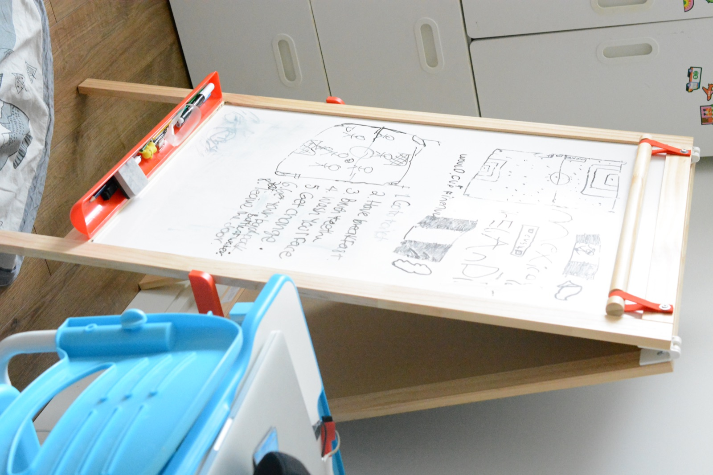
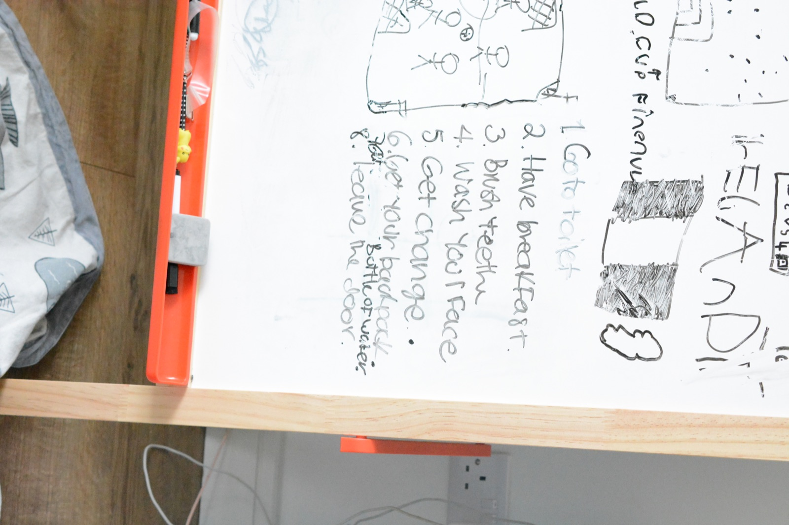
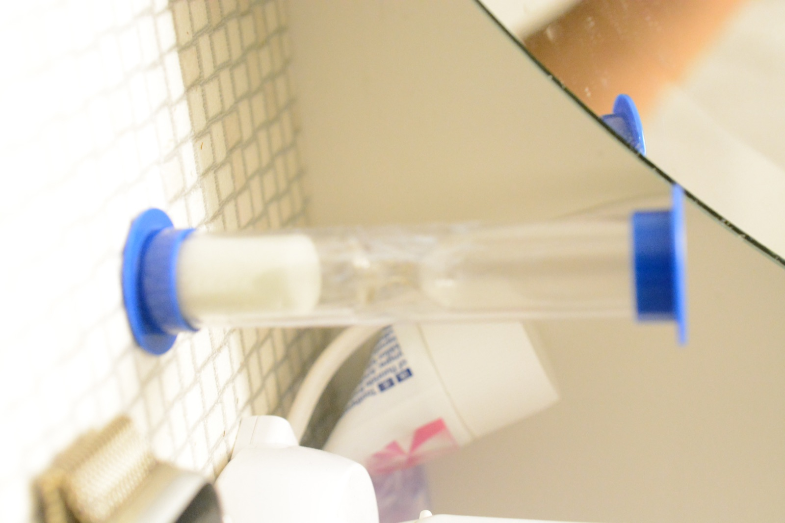
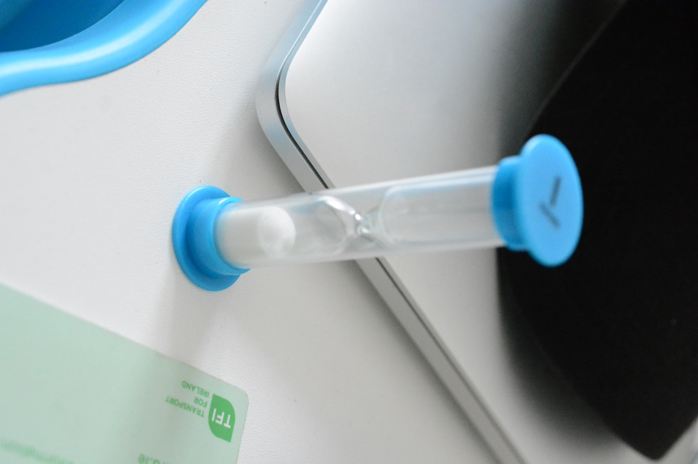
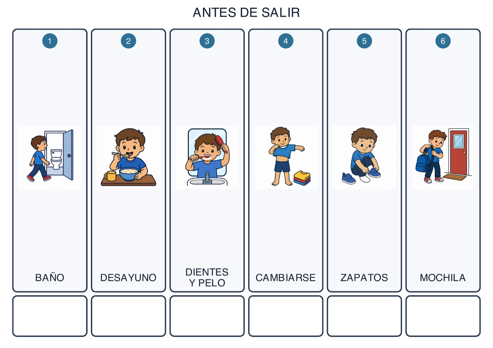

Listen
Ask the child to identify the tasks he believes belong in his morning routine.
TDAH / ADHD Project · Ongoing case study
A weekly exploration of how a simple, flexible routine can help an eight-year-old child move through the morning with more independence, predictability and less overwhelm.
01 · The context
For two consecutive school years, arriving at school on time has been inconsistent. Mornings often became a race against the clock: looking for shoes, forgetting belongings, leaving later than planned and sometimes arriving without school materials or homework.
The pressure created stress for everyone and sometimes led to shouting. The child has not been diagnosed with ADHD, but he shows several traits often associated with it, including forgetfulness, difficulty with organisation and challenges moving through time-based tasks.
To design a flexible routine system that helps neurodivergent children move through everyday activities with greater independence, predictability and less overwhelm.
Research note: This is an observational design case study, not a medical assessment. The child’s identity is kept private, and no diagnosis is claimed or implied.
02 · Starting small
Instead of creating the routine for him, I involved the child from the beginning. I asked what he thought he needed to do before going to school, and we built the first list together.
Ask the child to identify the tasks he believes belong in his morning routine.
Turn the ideas into a short sequence that can be seen and followed independently.
Watch where time is lost, then change one part of the system at a time.
The original idea was to use printed flash cards. For Week 1, we adapted the concept using only a whiteboard and a whiteboard marker.
The broken printer became a design constraint, not a reason to delay the project. The first prototype was intentionally simple and immediately usable.


Recorded from the whiteboard to preserve the child-led starting point.
03 · Weekly report
Two school days
The Week 1 report brings the first two school mornings together. Each card shows the arrival result on the front and the field notes, description and material used on the reverse.
Select a card to move between the arrival result and the first field report.
04 · What changes next
After the two-day first week, the routine needed to make time visible and reduce the number of decisions required in the morning. Four small changes are being introduced during the following school week.
The evening before school, I now ask him to choose what he wants to wear. Having the clothes ready removes one decision from the morning and helps prevent extra mental load.

A two-minute sand timer is being introduced this week to show the recommended brushing time in a concrete, easy-to-understand way.

A second, one-minute sand timer is being introduced to support the transition while getting dressed, another task that often takes a long time.
I am starting to wake up a few minutes before 8:00 AM, creating a small buffer before the 8:50 AM school start.
The two-day sample is too small for a conclusion. It shows that the handwritten list can make the sequence visible; the new preparation and time cues will be observed during the following week.
05 · Planned concept

This visual board is intended for a later iteration, once the printer is available. It condenses the routine into six large panels: bathroom, breakfast, teeth and hair, getting dressed, shoes and backpack.
Project status: design only. This board was not part of the Week 1 results and has not yet been introduced, observed or evaluated.